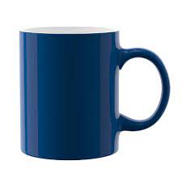
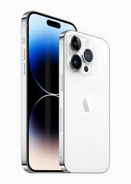
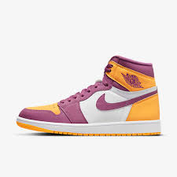

GOOGLE LENS VS MOBILE NET

Mug

Google Lens is more accurate than Mobile Net
Mobile Phone

Google Lens is more accurate than Mobile Net
Bag
Google Lens is more accurate than Mobile Net
Shoes

Google Lens is more accurate than Mobile Net
Book
Google Lens is more accurate than Mobile Net